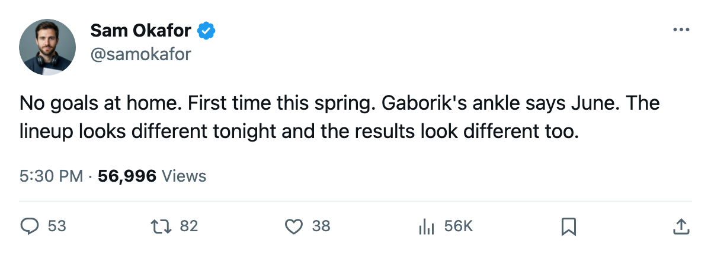

LEAFS 0, PENGUINS 2, series 3-2: the ankle that takes 99 points off the ice
Toronto cannot score at home, Gaborik's return date is 2005-06-02, and Game 6 goes to Pittsburgh on Monday
 Sam OkaforLeafs beat reporter · Queen City Telegram
Sam OkaforLeafs beat reporter · Queen City Telegram
The  Toronto Maple Leafs lost Game 5 tonight, 0-2 at home, and the series against the
Toronto Maple Leafs lost Game 5 tonight, 0-2 at home, and the series against the  Pittsburgh Penguins is now 3-2 Toronto. The Maple Leafs managed no goals in front of their own crowd for the first time this postseason.
Pittsburgh Penguins is now 3-2 Toronto. The Maple Leafs managed no goals in front of their own crowd for the first time this postseason.
 Marian Gaborik99 [308] did not play. The league lists an ankle with an onset window between 2005-04-26 and 2005-04-28 and a firm return date of 2005-06-02. That puts him back after the regular season would end, after the draft on 2005-06-08, and well past any date this series could finish. He was the team's leading scorer in 82 games with 55 goals and 99 points on a $1.10M contract with 1 year remaining. This spring he carried 4 goals and 6 assists in 8 games.
Marian Gaborik99 [308] did not play. The league lists an ankle with an onset window between 2005-04-26 and 2005-04-28 and a firm return date of 2005-06-02. That puts him back after the regular season would end, after the draft on 2005-06-08, and well past any date this series could finish. He was the team's leading scorer in 82 games with 55 goals and 99 points on a $1.10M contract with 1 year remaining. This spring he carried 4 goals and 6 assists in 8 games.
The lineup card shifted without him.  Rick Nash85 [364] moved up to the 41LW slot, which puts him on the first power-play unit.
Rick Nash85 [364] moved up to the 41LW slot, which puts him on the first power-play unit.  Darcy Tucker79 [1015] dressed for the first time since early April, taking a spot at K2LW and L3RW.
Darcy Tucker79 [1015] dressed for the first time since early April, taking a spot at K2LW and L3RW.  Ramzi Abid80 [245] slid from the fourth line into the H1__ role, and
Ramzi Abid80 [245] slid from the fourth line into the H1__ role, and  Stanislav Chistov87 [518] returned to L3LW after a game at the wing.
Stanislav Chistov87 [518] returned to L3LW after a game at the wing.
 Roberto Luongo97 [593] has been 7-2 with a 1.90 goals-against average and a .948 save percentage across this postseason. He did not have the numbers tonight. The series is three wins to two, two games away from the conference final.
Roberto Luongo97 [593] has been 7-2 with a 1.90 goals-against average and a .948 save percentage across this postseason. He did not have the numbers tonight. The series is three wins to two, two games away from the conference final.
Pittsburgh scored twice in the first period and shut the door.  Johan Hedberg91 [380] has carried the goaltending for the Penguins all spring at 4-5 with a 2.35 GAA, and Sebastien Caron79 [659] owns a 1.00 GAA in his one relief appearance. Neither one has given up more than three in a game since the opening round.
Johan Hedberg91 [380] has carried the goaltending for the Penguins all spring at 4-5 with a 2.35 GAA, and Sebastien Caron79 [659] owns a 1.00 GAA in his one relief appearance. Neither one has given up more than three in a game since the opening round.
The season series between these clubs reads 7-1-0 in Toronto's favour across 8 games with a 32-19 goal margin. Tonight was Pittsburgh's second regulation win in eight meetings.
The old-club road
Monday's Game 6 at Pittsburgh brings Ramzi Abid [245] to the building he left on 2005-01-25, and  Mikael Renberg78 [827] gets the Toronto sweater he wore before that same date. The Pittsburgh Penguins also lost
Mikael Renberg78 [827] gets the Toronto sweater he wore before that same date. The Pittsburgh Penguins also lost  Guillaume Lefebvre76 [568] to a foot injury with a return date of 2005-05-15 and
Guillaume Lefebvre76 [568] to a foot injury with a return date of 2005-05-15 and  Kris Beech73 [48] to an elbow with a return of 2005-05-19. They are dressing two goaltenders with sub-1.00 career playoff GAA and a forward line that has 10 goals from Eric Meloche78 [654] this spring.
Kris Beech73 [48] to an elbow with a return of 2005-05-19. They are dressing two goaltenders with sub-1.00 career playoff GAA and a forward line that has 10 goals from Eric Meloche78 [654] this spring.
Toronto has 3 days before Game 6. The next game at home is 2005-05-04, if the series gets that far.
